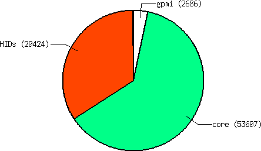
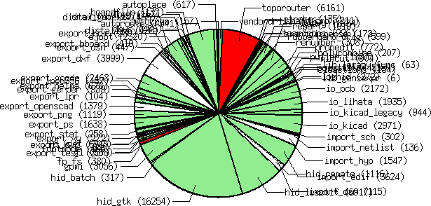

|  | 
| |
| Before modularization: pcb-rnd version 1.0.7
Note: gpmi was already a plugin | After modularization: pcb-rnd version 1.0.9
Note: gpmi is part of the "plugins" slice |
Fortunately PCB already had a strong infrastructure supporting this idea. It has dynamic loadable plugins and the GUI and exporters are in separate HID modules. While working on pcb-gpmi and later pcb-rnd, I added the gpmi module as a separate plugin.
In version 1.0.8 and 1.0.9 a cosiderable chunk of core code has been moved into core plugins. A core plugin is just a plugin that is maintained together with the core, in the same repository, still the code is somewhat detached from the core. More importantly, the user can choose, for each plugin, separately:
I believe such modularization has benefits on multiple levels:
|

(Red means the plugin doesn't really work).
| module | size [sloc] | status | configure default | class | description |
|---|---|---|---|---|---|
| autoplace | 613 | works | buildin | (feature) | Automatically place elements. |
| autoroute | 4337 | works | buildin | (feature) | Automatically route selected or all rats. This is the original autorouter. |
| dbus | 438 | disabled
(TODO: needs scconfig support) | disabled | (feature) | Remote control PCB using DBUS. |
| djopt | 2322 | works | buildin | (feature) | Various board optimization algorithms. |
| export_bom | 376 | works | buildin | export | Export bom (Bill of Materials) |
| export_gcode | 2455 | works | buildin | export | Export to gcode |
| export_gerber | 974 | works | buildin | export | Export to gerber |
| export_lpr | 97 | works | buildin | export | Export to lpr (using export_ps to generate postscript) |
| export_nelma | 688 | works | buildin | export | Export to nelma (Numerical capacitance calculator) |
| export_png | 1110 | works | buildin | export | Export to png, gif and jpeg |
| export_ps | 1620 | works | buildin | export | Export postscript or embedded postscript. |
| fontmode | 164 | works | buildin | (feature) | Font editing actions. |
| fp_fs | 98 | works | buildin | fp | Footprint: file system based implementation. Used to be called Newlib: load footprints from directories. Run external processes for the parametric footprints. |
| gl | 592 | disabled
(pcb-rnd has no support for opengl.) | disabled | (feature) | Common gl functions for hids. |
| gpmi | 3007 | works | buildin
(if gpmi is installed) | (feature) | Scriptable plugin system with about 10 scripting languages supported and dynamic load/unload of scripts that can manipulate the GUI, the board, can implement exporters, etc. |
| hid_batch | 305 | works | buildin | hid | HID without GUI; read actions from stdin. |
| hid_gtk | 12535 | works | buildin | hid | GUI: the GTK HID. |
| hid_lesstif | 6687 | works | buildin | hid | GUI: the lesstif HID. |
| import_edif | 3578 | works | buildin | import | Import code for netlists in the EDIF format. |
| import_sch | 261 | works | buildin | import | Imports element and netlist data from the schematics (or some other source). |
| legacy_func | 72 | works | buildin | (lib) | Random collection of old/obsolete (legacy) functions. 3rd party plugins may depend on them. This module implements C functions and variables and does not register actions or flags. |
| mincut | 886 | works | buildin | (feature) | Use the minimal cut algorithm to indicate shorts: instead of highlighting two random pins/pads, try to highlight the least number of objects that connect the two networks. |
| oldactions | 57 | works | disabled | (feature) | Random collection of old/obsolete actions. Bell(): audible feedback; DumpLibrary(): print footprint library on stdout |
| puller | 1885 | works | buildin | (feature) | Pull traces to minimize their length. |
| renumber | 223 | works | buildin | (feature) | Renumber elements (renaming them) and generate a text file for back annotation. |
| report | 762 | works | buildin | (feature) | Report() and ReportObject() actions - print a report about design objects. |
| shand_cmd | 211 | works | buildin | (feature) | vi-like command shorthands (1..3 character long commands) |
| stroke | 135 | partially works (doesn't work with lesstif; works with the gtk hid, but there's no zoom bindings) | disabled | (feature) | Gesture recognition with libstroke. |
| toporouter | 6165 | fails
(infinite loop in gts) | disabled | (feature) | Automatically route selected or all rats using a topological algorithm. This is the new autorouter from 2009. |
| vendordrill | 574 | works | buildin | (feature) | Vendor drill mapping. |
| name | description |
|---|---|
| (feature) | random features directly accessible for the user, usually actions |
| (lib) | code library; functionality not directly accessible for the user but other plugins may depend on it |
| hid | Human Interface Device: interactive user interface, usually GUI |
| import | load alien formats into the design space |
| export | save (parts of) the design space in alien formats |
| fp | footprint (element) library implementation |